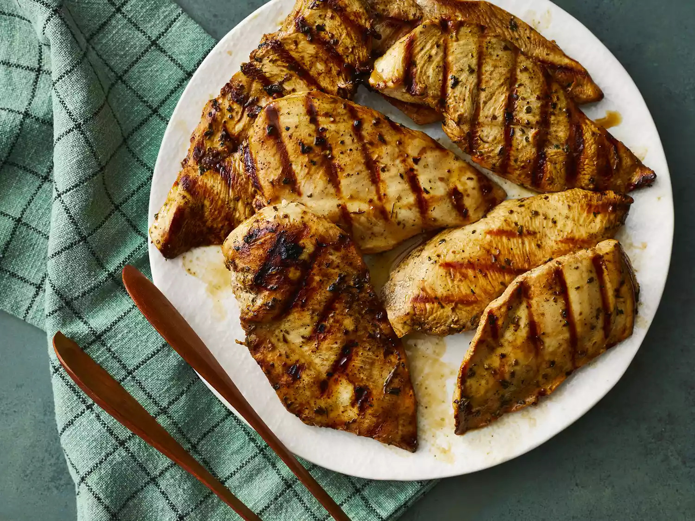

Grilled Chicken Marinade Recipe

Description
This marinade for grilled chicken is so flavorful and so easy to prep with easy pantry ingredients. It's simply the best chicken marinade for any occasion.
This top-rated grilled chicken marinade recipe ensures perfectly tender, juicy, and flavorful chicken every time.
How to make: Grilled Chicken Marinade
It truly couldn't be easier to make this chicken marinade: Simply mix the first eight ingredients
(vinegar, soy sauce, olive oil, parsley, basil, oregano, garlic powder, and black pepper) in a bowl and pour into a zip-top bag.
Of course, you'll find the full recipe below — including step-by-step instructions for marinating and grilling the chicken.
Ingredients
- 1/4 cup red wine vinegar
- 1/4 cup reduced-sodium soy sauce
- 1/4 cup olive oil
- 1 & 1/2 teaspoons dried parsley flakes
- 1/2 teaspoon dried basil
- 1/2 teaspoon dried oregano
- 1/4 teaspoon garlic powder
- 1/4 teaspoon ground black pepper
- 5 skinless, boneless chicken breasts, thinly sliced
How to make: Grilled Chicken Marinade (in steps)
- Whisk vinegar, soy sauce, olive oil, parsley, basil, oregano, garlic powder, and black pepper together in a bowl and pour into a resealable plastic bag.
Add chicken, coat with the marinade, squeeze out excess air, and seal the bag. Marinate in the refrigerator, at least 4 hours.
- Preheat grill for medium-low heat and lightly oil the grate. Drain and discard marinade.
- Grill chicken on the preheated grill until no longer pink in the center, 4 to 5 minutes per side.
An instant-read thermometer inserted into the center should read at least 165 degrees F (74 degrees C).